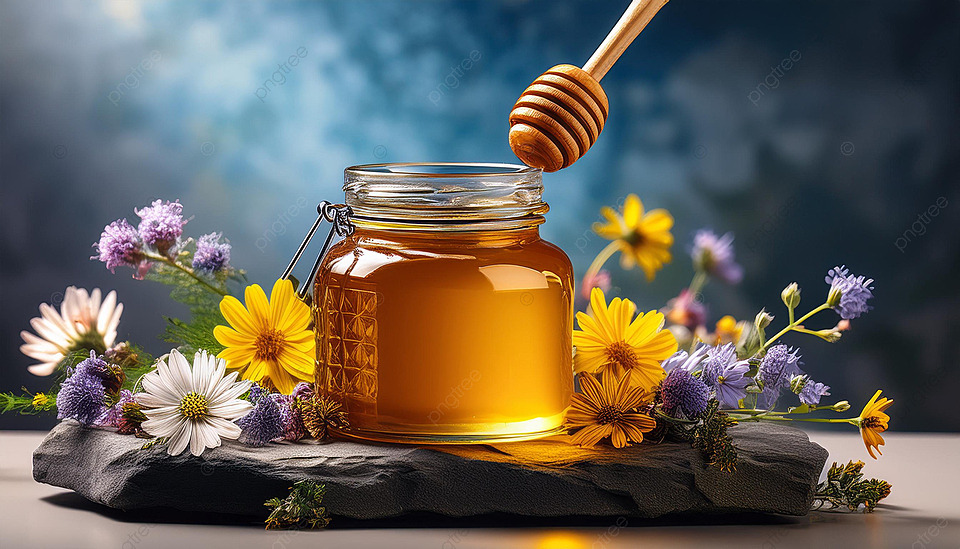

Bienvenue chez Douceur Naturelle
Savourez la douceur de la nature avec nos miels purs et authentiques.
Voir nos produitsLes Abeilles, nos alliées

Les abeilles sont essentielles à notre écosystème. Elles pollinisent les plantes et produisent du miel, un aliment naturel aux innombrables bienfaits pour la santé.
En achetant nos produits, vous soutenez la préservation de ces créatures indispensables.
Nos Types de Miel

Miel d'Acacia
Un miel doux et floral, idéal pour vos desserts.

Miel de Fleurs
Un goût riche et varié qui reflète la diversité florale.

Miel de Forêts
Un miel sombre et intense, parfait pour vos thés.